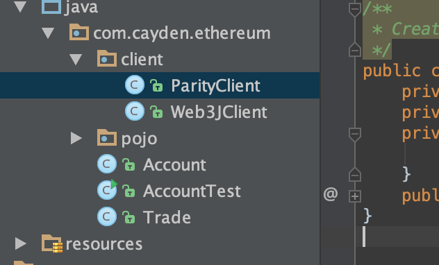

1. Remix开发智能合约¶
1.1. web3j简介¶
web3j是一个轻量级、高度模块化、响应式、类型安全的Java和Android类库提供丰富API，用于处理以太坊智能合约及与以太坊网络上的客户端(节点)进行集成。
可以通过它进行以太坊区块链的开发，而无需为你的应用平台编写集成代码。
1.3. 配置pom.xml¶
<?xml version="1.0" encoding="UTF-8"?>
<project xmlns="http://maven.apache.org/POM/4.0.0"
xmlns:xsi="http://www.w3.org/2001/XMLSchema-instance"
xsi:schemaLocation="http://maven.apache.org/POM/4.0.0 http://maven.apache.org/xsd/maven-4.0.0.xsd">
<modelVersion>4.0.0</modelVersion>
<groupId>com.cayden.ethereum</groupId>
<artifactId>ethsample</artifactId>
<version>1.0-SNAPSHOT</version>
<dependencies>
<dependency>
<groupId>org.web3j</groupId>
<artifactId>core</artifactId>
<version>2.2.1</version>
</dependency>
<dependency>
<groupId>org.slf4j</groupId>
<artifactId>slf4j-log4j12</artifactId>
<version>1.7.2</version>
</dependency>
</dependencies>
</project>
1.4. 新建ParityClient¶
package com.cayden.ethereum.client;
import org.web3j.protocol.http.HttpService;
import org.web3j.protocol.parity.Parity;
/**
* Created by cuiran on 18/7/6.
*/
public class ParityClient {
private static String ip = "http://127.0.0.1:8545/";
private ParityClient(){}
private static class ClientHolder{
private static final Parity parity = Parity.build(new HttpService(ip));
}
public static final Parity getParity(){
return ClientHolder.parity;
}
}
如图所示
